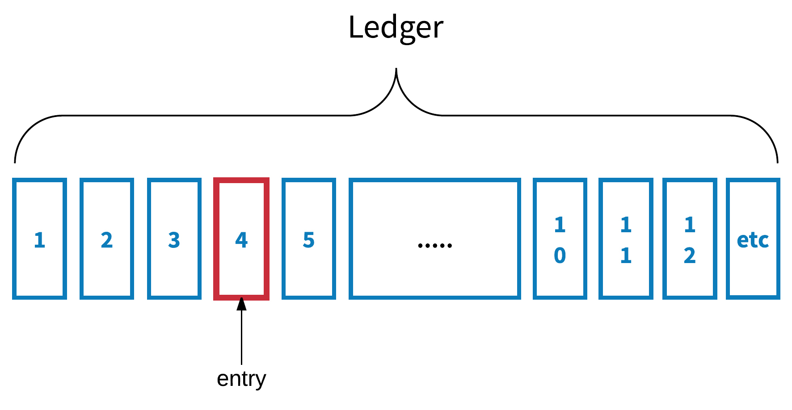
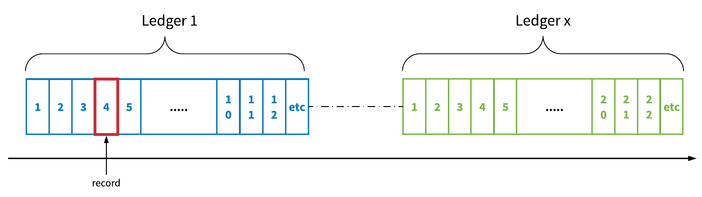
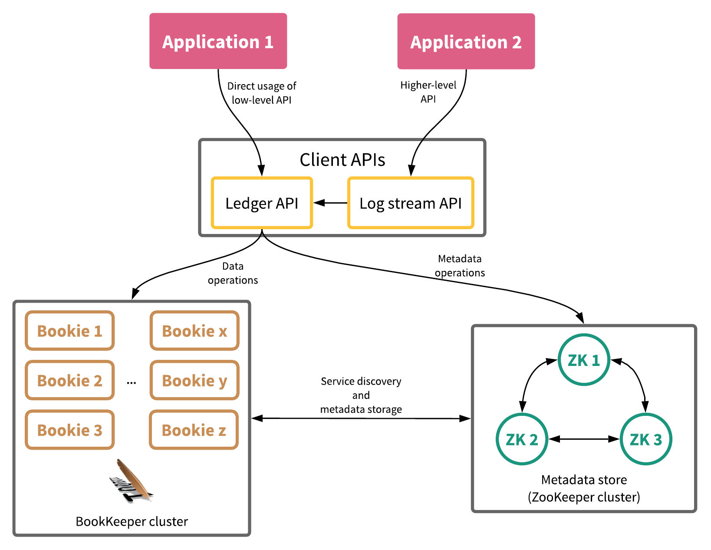
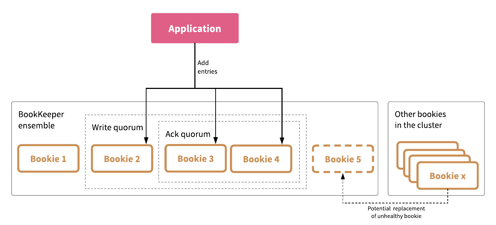
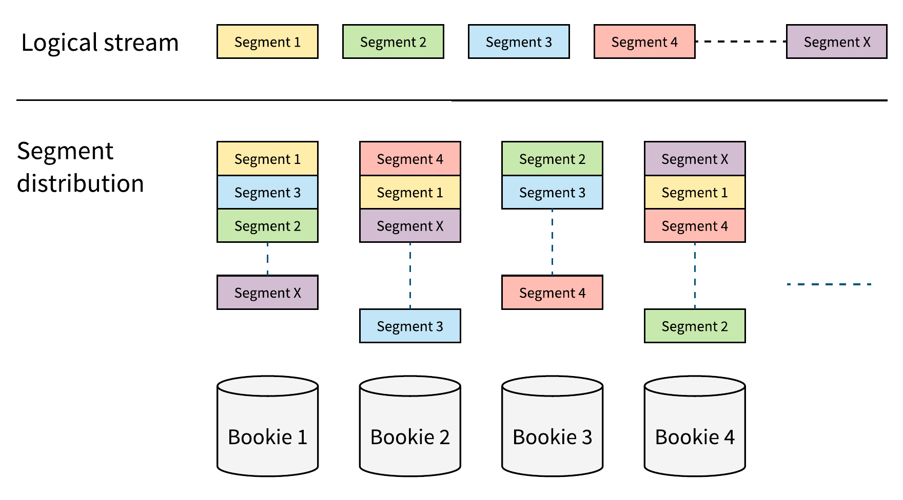
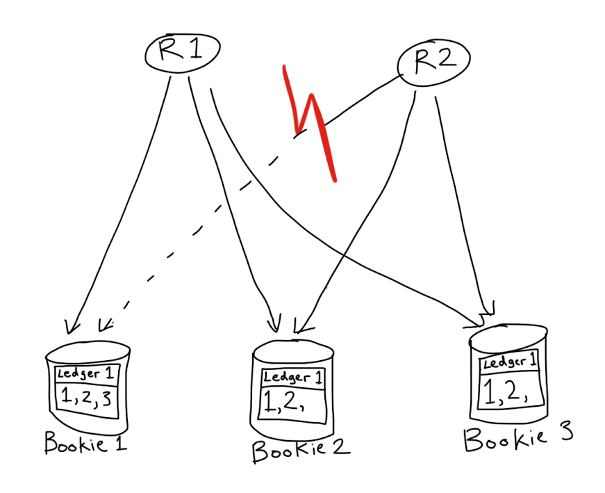
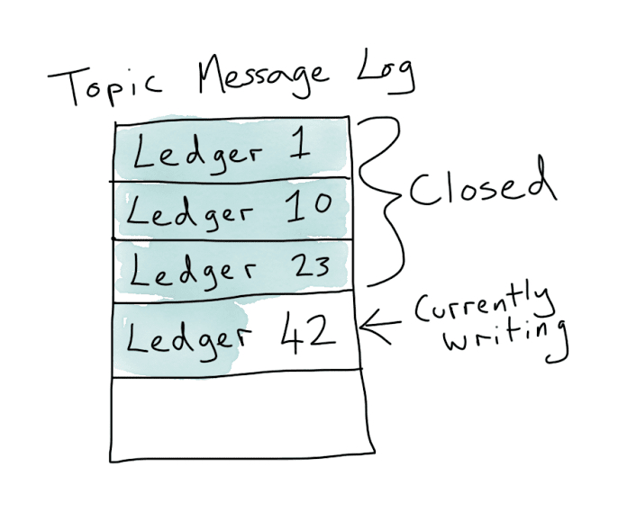

说明：以下内容从Reference中所述的博客翻译整理而来
Apache BookKeeper是可扩展、容错、低延迟的日志存储服务，针对实时负载进行了优化。
Bookeeper中的概念
Records
数据以一系列不可分割的记录（record）而不是字节数组的形式写入Apache BookKeeper中的日志。记录是BookKeeper中最小的I/O单位，也是寻址单位。每条记录都有一个单调递增的序列号。
Logs
BookKeeper提供了两种表示日志的存储原语：一种是ledger （log segment）；另一个是流（log stream）。基于此，BookKeeper对历史数据和实时数据提供了统一的存储抽象。
ledger是一系列记录，是BookKeeper中最底层的存储原语，可用于有界序列或无界流，ledger关闭后无法再次写入。

图1. BookKeeper ledger：有界的数据序列
流是无界的记录序列，默认不会终止。和ledger不同， 流可以被多次打开并写入。一个流实际上由多个ledger组成，根据基于时间或空间的滚动策略进行轮换。流主要的数据保留机制是截断，即根据基于时间或空间的保留策略丢弃最旧的ledger。

图 2. BookKeeper stream: 无界的数据序列
Bookies
BookKeeper中的存储节点称为bookie. 为了性能起见，各个bookie存储ledger的片段，而不是存储整个ledger，因此多个bookie作为一个整体对外提供服务。
Metadata
BookKeeper使用zookeeper保存ledger和bookie的元数据。

图3.BookKeeper典型安装配置
Replication
BookKeeper会把同一条记录复制到同一个数据中心（或多个数据中心）的多个节点上，通常是3个或5个。和其他系统所采用主副本或管道（pipeline）复制算法不同，BookKeeper采用并行quorum-vote复制算法，以保证可预测的低延迟。

图4. BookKeeper中的ensemble, write和ack quorums
在上图中：
- BookKeeper集群中多个bookie节点（图中的bookie1~5）组成了一个ensemble来保存给定ledger的记录。
- ledger上的记录被划分到ensemble中的bookie。每条记录被保存到write quorum size参数所指定的多个节点中（图中的bookie2,3,4）。
- 写入时，要等到接收到ack quorum size参数所指定的多个节点的确定，才认为写入成功（图中的节点3,4）。
- ensemble中的节点故障时，可以被其他正常的节点替换。
Replication的核心思路
BookKeeper中的复制基于以下基本思路： - 日志（流）是面向记录的而不是面向字节数组的。也就是说记录是数据的保存单位而不是字节数组。
- 日志（流）中记录的顺序与记录副本的实际存储是分离的。
这两个核心原则确保了BookKeeper复制能够提供以下特性：
- 提供多种选项来将记录写到bookies中，这确保了即使集群中的许多bookies停机或运行缓慢，写入也能最终完成（只要有足够的容量来处理负载）。改变ensemble就可以做到这一点。
- 通过增加ensemble大小来最大化单个日志（流）的带宽，以使单个日志不会局限于一台或一小组机器。这可以通过将ensemble大小配置为大于write quorum大小来实现。
- 通过调整ack quorum大小来改善尾延迟。这对于确保BookKeeper的低延迟至关重要，同时仍提供一致性和持久性保证。
- 通过多对多副本恢复提供快速复制。所有bookies都可以充当记录副本的发送者和接收者。
Durability
BookKeeper的持久性通过显式调用fsync和写入确认来实现。
Consistency
BookKeeper提供了一个简单但强大的一致性保证——可重复读。
对于保存到日志中的数据：
- 如果记录已经写入确认，则必定是立即可读的。
- 如果一条记录已经被读取了一次，则必须始终可读。
- 如果记录R成功写入，那么R及之前的记录都已成功持久化并可读。
- 所有读取端看到的数据顺序都是一致的，并且重复读取也是一样的。
BookKeeper的可重复读一致性是基于LastAddConfirmed (LAC) 协议完成的。
Availability
在CAP理论范畴中，BookKeeper是CP系统，但是仍然提供了很高的可用性。
I
| 可用性类型 | 机制 | 描述 |
|———————-|—————–|——————————————————————————————————————-|
|Write availability|Ensemble changes |当bookie发生故障时，写入端将重新配置数据放置位置，这样可以确保只要集群中剩余的bookies总数足够，写入操作始终会成功。|
|Read availability |Speculative reads|允许读取端向ensemble中的任何节点读取数据，这有助于分散读取压力，减少尾延迟。 |
Low latency
强持久性和一致性保证是分布式系统中的复杂问题，在还要满足企业级低延迟目标时尤为突出。BookKeeper通过一下方式来满足这些要求：
- 在单个bookie上，不同工作负载（写入、尾读取和追赶/随机读）之间是有I/O隔离的。在journal（BookKeeper的事务日志）层级上使用 group-committing机制以平衡延迟和吞吐量。
- quorum-vote并行复制机制用于屏蔽网络故障、JVM垃圾回收暂停和慢速磁盘引起的延迟损耗。
- 长轮询机制，可在写入确认后立即通知尾读取端。
I/O isolation
在大多数消息传递系统中，慢速消费者会导致消息积压，从而可能导致总体性能下降。慢速消费者会迫使存储系统从持久性存储介质中读取数据，造成I/O抖动以及页缓存的换入换出。这源于/O组件对于写入、尾读取、追赶读取等共享同一个读写路径。BookKeeper中，对三种IO操作设计了3条不同的I/O路径。因为对于写入和尾读取要求可预测的低延迟；而对于追赶读取，吞吐量更重要。基于对这些工作负载之间的物理隔离，BookKeep可以充分利用：
- 网络入口带宽和顺序写入时的磁盘写入带宽
- 网络出口带宽和多个ledger磁盘用于读取的IOPS
Data distribution
构建在BookKeeper之上的服务把日志流作为分段的ledger保存在BookKeeper中，这些段可以复制到不同的bookie中。基于此获得了以下特性：
- 存储容量不再受单个节点的存储容量所限制
- 在扩展BookKeeper集群时不会发生日志流的重平衡，此外还提供了多样的放置策略，包括机架感知、区域感知和基于权重的选择等。
- 节点故障时，缺失副本修复快速高效。
与Kafka这种的以分区为中心的系统相比，BookKeeper的水平扩展性更具优势，在Kafka中，日志流（即Kafka分区）仅顺序存储在集群机器的子集上，并且扩展Kafka集群需要进行数据重新平衡，这是一个资源密集、容易出错且消耗很大的操作。此外，在以分区为中心的系统上，单个磁盘损坏将要求系统将整个日志流复制到新磁盘中，以满足复制要求。

图5. 日志流：所有日志段都复制到可配置数量（此处副本数为3）的的多个bookie中（此处为4）。日志段均匀分布以实现水平的可扩展性，且无需重平衡。
Scalability
BookKeeper的扩展性在于以下几方面：
Number of ledgers/streams
流可扩展性是指日志流存储能够支持大数量的流（从数百个到数百万个ledger和流），同时始终提供一致性能的特性。
实现这一目标的关键是存储格式。如果把ledger和流存储在专用文件中，将难以扩展，因为这些文件会定期从页缓存刷新到磁盘，从而I/O会分散在整个磁盘上。
BookKeeper以交错的存储格式将来自不同ledger和流的数据记录汇总以存储在大文件中，然后进行索引。这减少了文件数量和I/O竞争，使得BookKeeper可以扩展大量的ledger和流。
Number of bookies
Bookie可扩展性是指通过增加更多的bookies以支持快速增长的流量的能力。在BookKeeper中，bookies之间是没有直接交互的，这使得只需添加新机器即可扩展群集。同样，基于BookKeeper在Bookies上分发数据的方式，在扩展群集时，没有高代价的、会大量占用网络和I/O带宽的分区数据重新平衡操作。
Number of clients
客户端可伸缩性是指日志流存储能够支持大量并发客户端，并支持大量扇出的能力。 BookKeeper基于多个方面实现此目的：
- 客户端和服务端都是基于Netty实现的异步网络I/O.
- 数据被复制到多个bookie, 客户端可以从任一副本节点读取。
- 通过增加副本数量可以增加读取扇出能力。
Single stream throughput
除了通过增加流或者bookie的数量来增大吞吐量，BookKeeper中还可以通过增大ensemble的数量来提高单个流的吞吐量。
Operational simplicity
BookKeeper旨在简化操作复杂度。可以在系统运行时通过添加更多bookie节点来轻松扩容。如果Bookie节点不可用，则其中包含的所有记录都将标记为“待复制（under replicated）”，并且bookkeeper自动恢复守护程序会自动将数据从其他可用副本复制到新的bookies中。 BookKeeper可以将运行中的bookie节点上提供只读模式；在某些特定情况下，例如磁盘已满、磁盘损坏，bookie也会自动变为只读模式。只读模式下的Bookie将不再接受新的写操作，但仍然提供读取。这种自我修复的特性减少了许多操作上的痛点。
TOAB
全序原子广播（Total Order Atomic Broadcast, TOAB）对于分布式系统来说是一个非常有用的特性。如果要构建一致性消息传递服务，则需要满足该特性。虽然不是严格要求，但实际上，如果希望在流处理系统中提供 effectively-once 或at-least-once语义，则TOAB也是必需的。
具备TOAB的系统有以下特性：
| Property | Description |
|————————————|—————————————–|
|Validity |If a correct participant broadcasts a message, then all correct participants will eventually deliver it. |
|Uniform Agreement |If one correct participant delivers a message, then all correct participants will eventually deliver that message. |
|Uniform Integrity |A message is delivered by each participant at most once, and only if it was previously broadcast. |
|Uniform Total Order|The messages are totally ordered in the mathematical sense; that is, if any correct participant delivers message 1 first and message 2 second, then every other correct participant must deliver message 1 before message 2.|
更简洁地说，TOAB 意味着：
- 没有消息丢失
- 没有重复
- 没有重排序
众所周知，TOAB与分布式系统中的共识是等效的。
有许多实现了TOAB的著名开源项目，比如ZooKeeper，etcd和Consul。但是，由于各种原因，这些实现无法扩展，因为它们只提供一个复制日志。向系统添加新节点只会增加广播一条消息所需的通信，也就是说是不可扩展的。
BookKeeper TOAB实现原理
一个ledger只有一个可以添加记录的写入者。这样使得可以很容易就能提供Uniform Total Order 和Uniform Integrity，因为写入的时候每个记录都会分配一个ID.
提供Validity 和Uniform Agreement 特性则略显复杂。为了提供Validity，需要确保，如果一个记录已经确认写入，那么从ledger就能读取到该条目。Uniform Agreement 要求所有之后的读取程序都能看到完全相同的一组消息。
当写入者正常运行时，提供这些特性是直白的。写入者知道哪些条目已被ack quorum确认，并将此信息作为显式消息或附加在后续记录上，发送给ensemble中的各个bookie。 此信息称为last add confirmed（LAC），类似于Zab或Raft中的提交阶段。ledger的读取者可以读取直到LAC的记录，同时bookKeeper向它们保证，它们读取到的任何记录最终都能被所有其他读取程序所读取。
Handling write crashes
当写入者发 生故障时事情变得复杂，写入的记录可能是以下情况：
- 已经被ack quorum确认，但是还未作为LAC发送。
- 已经被ack quorum确认，但是写入者没有接收到该确认消息
- 少于ack quorum个bookie确认写入。
问题是，在发生故障时这三种情况是无法区分出来的。在情况1中，为了提供Validity，必须保存所有的读取者都能读取到已确认的记录。在情况2和3中，为了提供Uniform Agreement，所有读取者需要对保留哪些记录达成一致。
解决这些问题的方法是关闭ledger。当关闭一个ledger时，需要决定哪条记录是最后一条记录，并达成共识后写入该决定，之后该决定就一直保持不变。
多个读取者可能会同时尝试关闭ledger。每个读取者都使用恢复机制来找出ledger的最后一个条目。虽然不能保证每个读取者都从恢复机制中收到相同的最后一条记录（因为每个读取者连接的bookie不同），但是可以保证所有读取者至少会看到写入者所确认的最后一个条目。
为了解决多个读取者从恢复机制读取到不同的结果，每个读取者需要把读取结果使用CAS方式写入zookeeper，只有一个写入能成功，写入失败的读取者读取成功写入的结果作为ledger正确的结尾记录。

图6. 两个读取者 R1 和R2，从ledger1恢复. R1可以看到记录3，但是R2不能，所以R1和R2恢复时会提出不同的最后记录。
Rounding out the properties
我们还需要考虑到没有完美的故障检测器这一事实。这意味着读取者可能会在写入者还活着的时候尝试恢复并关闭ledger，这通常发生于写入者出现网络分区时。
为了确保Validity，需要确保一旦读取者开始恢复一个ledger，那么写入者就不能再向该ledger加入记录。因为这之后加入的记录是保存到已确认的最后一条记录后面，没有读取者可以读取到这些记录。
为解决此问题，BookKeeper在恢复开始时引入了防护（fencing）机制。系统会将fencing消息发送给ledger的write quorum中的每个bookie，告诉它们不再确认该ledger的任何新消息。一旦fencing消息在每个ack quorum被至少一个bookie确认，之后ack qurom就不会确认任何新写入的记录，从而写入者就无法确认写入任何新记录。
Fencing和恢复机制提供了Validity特性，最后的CAS写入到ZooKeeper，设置了ledger最后记录的不可变性，提供了Uniform Agreement特性。从而TOAB要求的所有特性都满足了。
Multiple ledgers
单单一个ledger的用处有限，因为它只有一个writer，如果该writer崩溃，就不能向ledger中添加任何其他内容。但是，要用作消息传递或状态机复制的复制日志，需要能够在崩溃后重新打开日志并重新开始添加新的日志条目，这通常是通过使用ZooKeeper完成的。下面将描述ApachePulsar是如何维护Topic消息日志的，但是这种方法其实是通用的，可以在其他应用程序中使用。但是我们建议使用DistributedLog，而不是自己去实现这个模式。DistributedLog是BookKeeper的高级客户端，封装了使用BookKeeper时的一些棘手的问题。
TOAB at work: Apache Pulsar topics
在Pulsar中，一个Topic的消息日志由一系列ledger组成。当一个Pulasr broker分配到一个topic，它从ZooKeeper读取该topic的ledger序列。在可以发布消息到该topic之前，需要保证最后一个ledger已经关闭了。然后，创建一个新ledger，并加入到该序列中，使用CAS向ZooKeeper中写入该ledger的序列号。

图7. Pulsar topic中的消息日志，是一系列的ledger
通过在ZooKeeper中存储ledger序列号，我们得到了序列号的TOAB保证。再加上ledger本身提供的TOAB保证，这意味着pulsar topic也具备了TOAB。由于DistributedLog使用了相同的模式，所以DistributedLog也可以提供TOAB。
Reference
https://streaml.io/blog/intro-to-bookkeeper
https://streaml.io/blog/why-apache-bookkeeper
https://streaml.io/blog/why-bookkeeper-part-2
https://streaml.io/blog/bookkeeper-toab